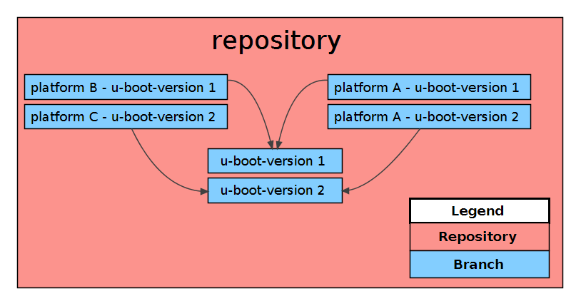

Evaluation U-Boot
The considerations from the design will be evaluated within this chapter.
Cross Target Support
U-Boot supports cross compilation and can therefore be compiled with a cross toolchain.
Build process
When building the same U-Boot version for different platforms, the same source code will be used. Storing the source code of the same U-Boot version for each platform separate, would lead to a huge overhead within the repository. A better solution is to download the source code for the specified U-Boot version at runtime. Two possibilities should be considered.
- Define the download process within the build script for each platform.
- Create on script containing the download process for each U-Boot version. Each platform that should be build can then execute this script and retrieve the sources at runtime.
The benefit of the latter obliterating the redundancy of the commands for downloading the sources for the specific U-Boot version.
Each U-Boot version has a branch, which contains a script that downloads the specific sources. Each platform has a branch for each U-Boot version that should be build, containing a script, that executes the download script from the U-Boot version branch.

Build steps
With the now evaluated build process, the build steps can be redefined.
- Checkout platform branch for U-Boot version X
- Checkout U-Boot version X branch
- Call build script from platform branch
- set necessary build parameters
- Call build script from U-Boot version X branch
- download sources
- if provided apply patches
- build U-Boot
- create archive